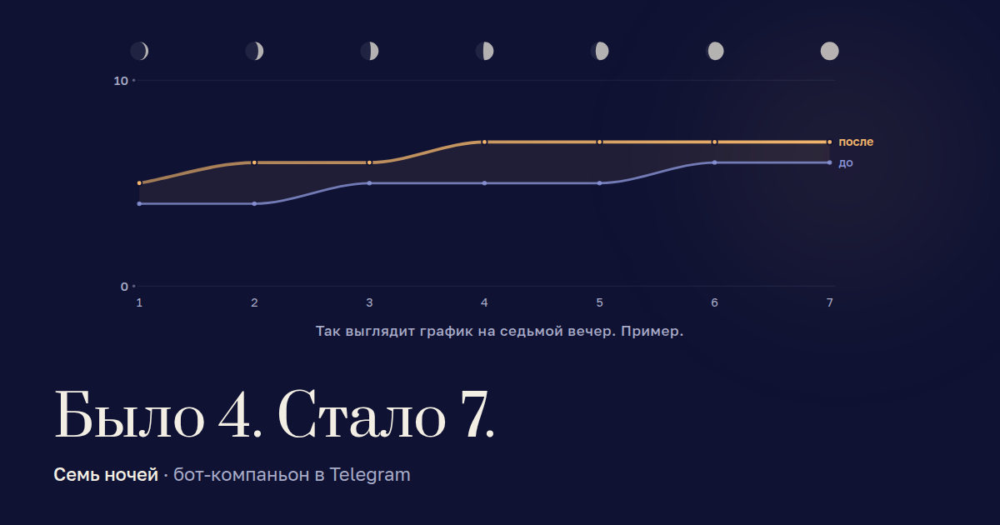

Семь вечеров подряд · одна аудиопрактика в вечер · в Telegram
Семь ночей, чтобы выдохнуть
Каждый вечер в Telegram приходит одна практика. Ложишься, надеваешь наушники, слушаешь. До и после отвечаешь одной цифрой, как ты. Через неделю видишь свой график: с чего всё началось и где ты сейчас.
Семь вопросов с ползунками. Ничего не нужно заполнять, ни почты, ни регистрации.
Было 4. Стало 7.
Если знакомо
- Ложишься и лежишь. Голова не выключается.
- Днём всё держишь, а вечером внутри сжато и не отпускает.
- Утром впереди разговор или день, к которому нужно собраться.
Семь ночей — не про «взять себя в руки». Про то, чтобы дать телу двадцать минут и посмотреть, что изменится.
Что будет каждый вечер
Один раз выбираешь удобный час, например 21:00. Дальше бот пишет сам. Вот как выглядит вечер.
Вечер 1 из 7
Шаг 1 · в твой час: замер «до»
Шаг 2 · практика
[[Две строки к практике первого вечера — заменим текстом специалиста]]
Голос [[Анны]]. Фрагмент первой практики.
Шаг 3 · замер «после»
Когда нажмёшь «Я сделал(а)» или через двадцать минут.
Шаг 4
Две цифры в день. Больше от тебя ничего не нужно.
Практика под то, как ты сейчас
Вечером по умолчанию — сон и расслабление. Но бывает нужно другое. Перед практикой бот спросит одной кнопкой, что сейчас ближе.
-
Сон и расслабление
Когда голова не выключается. Вечер, перед сном.
по умолчанию
-
Тревога и стресс
Когда внутри сжато и не отпускает. Утром или вечером.
-
Настроиться на день
Перед важным разговором или просто трудным днём. Утром.
Нужно днём, не дожидаясь вечера — нажми «Практика сейчас». Такой раз не занимает один из семи вечеров, но бот так же запишет две цифры.
Седьмой вечер
После второй цифры бот присылает картинку: семь вечеров, две линии, до и после.

Картинку можно сохранить или переслать. Разговор — по желанию, не обязательный шаг.
Что бот про тебя знает
- час, в который тебе писать
- какой сейчас вечер из семи
- по каждому вечеру: цифра до, цифра после, дата
Всё. Ни имени, ни телефона, ни почты. Бот не спрашивает и не запоминает.
Пропустить вечер — можно
Программа не сгорает и не пропускает практику. На следующий вечер бот напишет:
Всё сдвигается на день. Все семь практик остаются твоими. Если нужно остановиться на дольше — есть кнопка «Поставить на паузу» и «Продолжить».
Вопросы
Сколько времени занимает один вечер?
Практика — около двадцати минут. Плюс две цифры: до и после. Всё вместе — меньше получаса, и почти всё это время ты лежишь.
Обязательно слушать именно перед сном?
Основная программа — вечерняя, в твой час. Но если нужно утром или днём, нажми «Практика сейчас» и выбери состояние. Такая практика не занимает один из семи вечеров.
Что если я пропущу вечер?
Ничего страшного. Бот не ругается и не пропускает практику: программа сдвигается на день, и ты проходишь все семь. Можно поставить на паузу и вернуться позже.
Что нужно, чтобы начать?
Telegram и наушники. Ничего не нужно устанавливать и заполнять. Открываешь бота, пишешь удобный час, вечером приходит первая практика.
Что бот знает обо мне?
Час, текущий вечер и по каждому вечеру две цифры с датой. Ни имени, ни телефона, ни почты. Историю можно попросить удалить.
Это заменяет терапию или врача?
Нет. Это семь аудиопрактик и способ увидеть в цифрах, как меняется твоё состояние за неделю. Если тебе тяжело и это длится давно, лучше поговорить со специалистом лично.
Первая практика может прийти уже сегодня
Открой бота, напиши час — например 21:00. В это время придёт первое сообщение.
Семь вечеров. По одной практике. Две цифры в день.